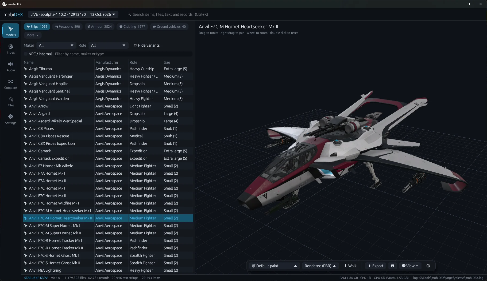
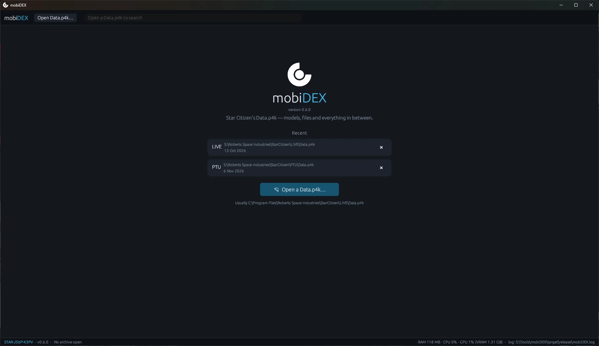

mobiDEX
Star Citizen's Data.p4k — models, files and everything in between.
Point it at your game install and browse every ship, gun, helmet and hat in 3D. Read the data behind them, play the sounds, and see exactly what changed between LIVE and PTU.

- files
- 1,379,308
- DataCore records
- 62,736
- text strings
- 90,946
- items
- 29,693
One Data.p4k — sc-alpha-4.10.2 LIVE — as indexed by mobiDEX.
The tour
Five tabs. One archive.
Same layout as the app — pick a tab on the left.
Models
Ships, weapons, armour, clothing and ground vehicles, rendered in full PBR. Drag to rotate, right-drag to pan, wheel to zoom. Swap paints, put armour on a body, walk around it, and export.
Index
The game data, formatted for people. Stats, descriptions, where to buy, paints and variants for ships and weapons — plus blueprints with their craft costs, and Wikelo contracts with what they ask for and what they pay out.
Audio
Every sound event, searchable — music, ambience, weapons, voice. Play it with the waveform in front of you, then save it out as MP3.
Compare
Open a second Data.p4k and get a full diff: items added, removed and changed, by category, down to the field. Export the changelog as Markdown.
Files
The raw archive as a folder tree. Preview a file, or extract a whole folder — with XML and PNG conversion as you go.
Patch day
LIVE vs PTU, field by field.
Pick your LIVE build and your PTU build. mobiDEX lines up every DataCore record, text string and file, then tells you what moved — not just that a ship changed, but which value, from what, to what.
- Added, removed and changed — filtered by ships, weapons, armour, components and more
- Jump from any changed item straight to it in 3D
- Export the changelog as Markdown, or the full list as text
Aegis Javelin Ships · data changed
Components[0].crewSize1 → 65 (+64)Components[0].maxBoundingBoxSize.x0 → 210Components[0].maxBoundingBoxSize.y0 → 475Components[30].Ports[0].attachAxesToAlign+ DefaultComponents[39].occluderSettings._Type_− SurfaceRaindrops_OccluderComponents[39].overrideControls.useFlatVisor− false
Get started
Three steps to the inside of the 'verse.
-
01
Download
Grab the latest build from the releases page and unzip it anywhere.
-
02
Open a Data.p4k
Usually here:
C:\Program Files\Roberts Space Industries\StarCitizen\LIVE\Data.p4kRecent builds are remembered, so LIVE and PTU are one click away next time.
-
03
Explore
Press Ctrl + K to search items, files, text and records from anywhere.

FAQ
Questions
Is mobiDEX free?
Yes. Download it from the GitHub releases page.
Is it open source?
No. The source isn't public — GitHub is used to publish releases.
However, the source code will be made public at a later date, once mobiDEX is in a place i am happy with.
Can I use what I extract commercially?
No. mobiDEX is for educational use only. Game assets belong to Cloud Imperium Games; follow their fan content guidelines.
Is this made by RSI or CIG?
No. mobiDEX is an unofficial community tool and isn't affiliated with or endorsed by Roberts Space Industries or Cloud Imperium Games.
Which builds does it read?
Any Data.p4k you point it at — LIVE, PTU, or an older copy you've kept for comparing.